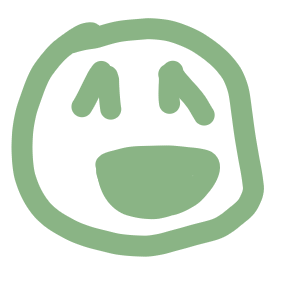

<!DOCTYPE html>

<head>

    <title>Environmental Justice - Unconventional Midterm</title>
    <link href="styles.css" rel="stylesheet">
    <link rel="preconnect" href="https://fonts.googleapis.com">
    <link rel="preconnect" href="https://fonts.gstatic.com" crossorigin>
    <link href="https://fonts.googleapis.com/css2?family=National+Park:wght@200..800&display=swap" rel="stylesheet">
</head>

<body>
    <canvas id="render"></canvas>
</body>
<script src="index.js"></script>
<div style="visibility: hidden;">
    
    
</div>